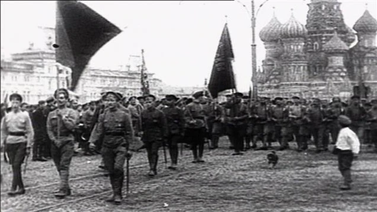
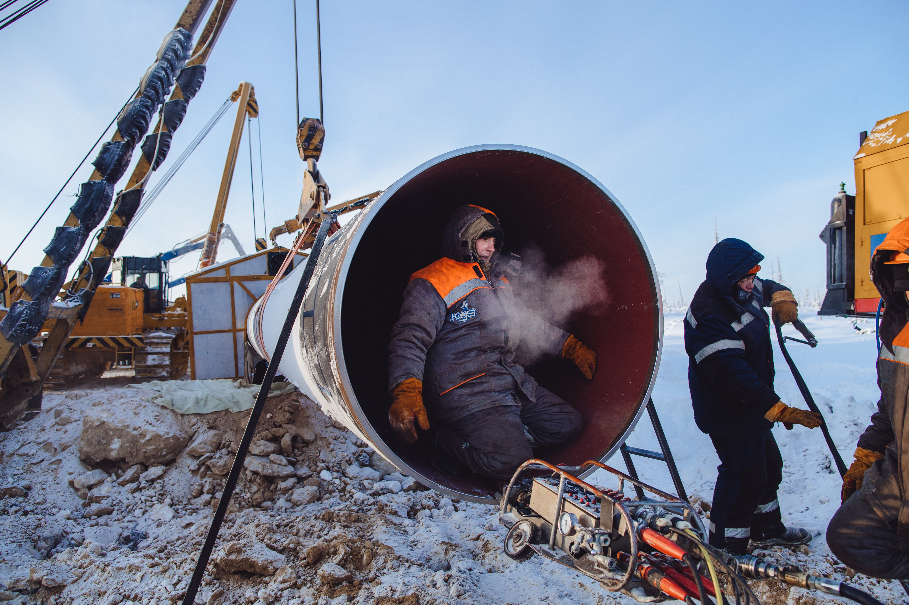
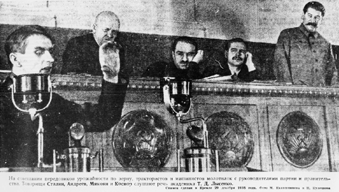
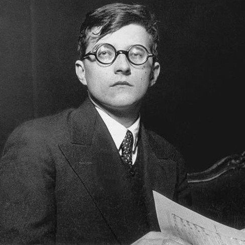
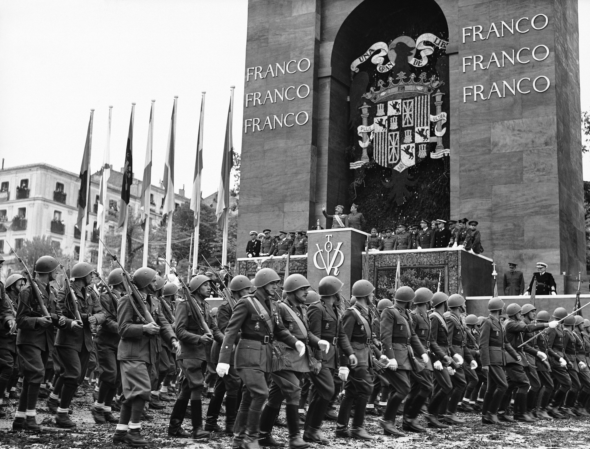
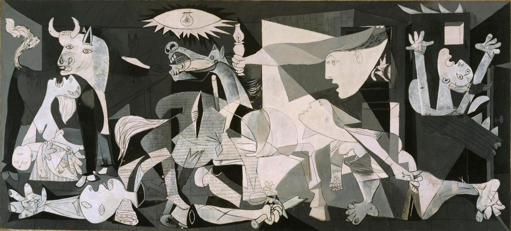

L'UNIONE
SOVIETICA
UN SECOLO DI POTERE, SCIENZA E ARTE
PERCORSO
1. L'Unione Sovietica
"La pianificazione statale ha trasformato l'URSS."
— Stalinismo e GulagSotto Stalin, l'industrializzazione forzata portò a una crescita colossale, ma a prezzo della sottomissione totale dei diritti individuali.

Tecnologia: Energia
Sfida estrema al Permafrost siberiano: creazione di reti energetiche su piloni d'acciaio per estrarre gas e petrolio senza far crollare il terreno gelato.

Scienze: Il DNA
"La genetica classica è scienza borghese."
— Trofim LysenkoIl Caso Lysenko bloccò lo studio del DNA in URSS, perseguitando i veri scienziati e causando carestie catastrofiche.

4. Musica: Šostakovič
La sua Settima Sinfonia fu simbolo della resistenza, ma Šostakovič visse sempre nel terrore della censura del regime.

Guerra Civile Spagnola
L'URSS inviò i caccia I-16 "Mosca" a difesa della Repubblica, in una prova generale della Seconda Guerra Mondiale.

Arte: Il Guernica

- Monocromatismo: Il grigio della morte.
- Cubismo: Corpi spezzati.
Guerra Fredda: Il Bipolarismo
"Una cortina di ferro è scesa sul continente."
— Winston ChurchillDopo il 1945, l'URSS e gli USA si divisero il controllo globale. Inizia un'epoca di tensioni geopolitiche dominata dalla minaccia atomica e dalla corsa allo spazio.

Ed. Civica: Libertà
Art. 21
Libertà di parola contro ogni dittatura.
La Scienza
Indipendente dal potere politico.
Diritti
La vita umana ha valore assoluto.